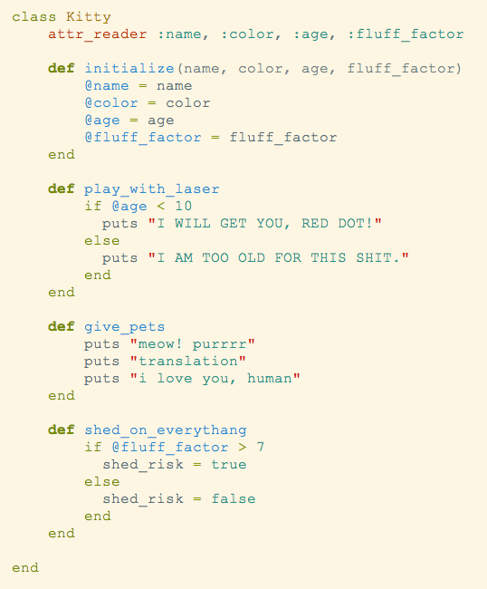

august 9, 2015
I've been reading/watching everything I can get my hands on about Ruby Classes this week, and to be honest, I haven't had that ah-ha moment yet. So I'm going to write a blog post about them. Because, those who can't do, teach. Right? Errr, something like that.
So far most of our work at DBC has involved small, independent Ruby methods. Classes are useful when you begin solving more complex problems. They help you keep track of methods and variables that work together, and save you the hassle of repeatedly rewriting code that you want to reuse--in short, they keep you organized.
In keeping with the cat lady theme my blog has (surprisingly?) taken on, lets assume that I want to use Ruby to keep track of my many cats and their charming kitty characteristics. First, I'd need to create a new class (remember to capitalize it!) and define an initialize method.
At first, initialize looks pretty weird. Don't fret...this initial (heh) method just sets up the class for use. Essentially what we're saying is, when a new instance of this class is created, we will pass it certain variables that can be used throughout the instance. These variables are aptly named: instance variables. Each instance variable will behave the same way for every instance of "Kitty", but they won't have the same value. That is, my cats all have names, but they don't all have the same name. These instance variables can be used anywhere throughout the class, as long as you preface them with an @.
Ok, so I've created a new instance of our class and initialized it. I also need to include an attr_reader for my instance variables, so that I can access them outside the class. Just plop it in right under the class Name. If I forget to do this, I'll get an undefined method error when trying to access my instance variables. Using attr_reader is just a shortcut. I don't have to include it, but without it I'd have to create a new method within my class for each variable, like so:
I can now write something simple like favorite_cat.name and Ruby will output jsweet. But let's up the creepy factor and say I want to start making my virtual cats do things. Let's create some instance methods.
Fun, right? Calling the play_with_laser method on favorite_cat will output: I WILL GET YOU RED DOT! Calling favorite_cat.give_pets will win you some meows and purrs, and shed_on_everything will evaluate to true or false, depending on fluff_factor (in this case, true).
Hopefully I've answered a few Ruby Class questions, but I'll leave the biggest one for you to ponder...